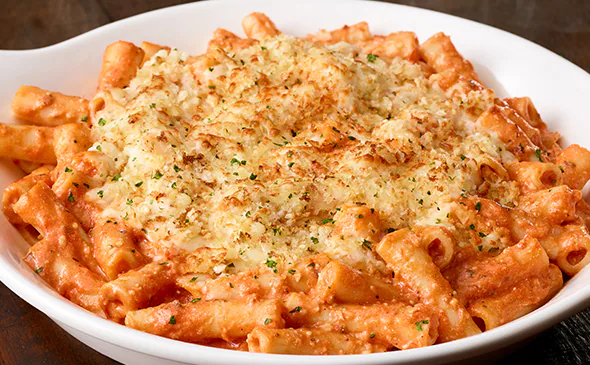

Baked Ziti

Description
Baked ziti is hearty comfort food in a casserole dish. It's cheesy, meaty, and the right amount of saucy for a dish that the entire family will love. While sometimes it may seem easier to just grab a pre-made baked ziti from the grocery store, we're here to tell you to put that cold pasta dish down! You'll be missing out on all of the wholesome goodness that homemade baked ziti has to offer — and the homemade version is actually easy to make.
The key to this recipe is the sauce and the cheese. Start with a store-bought marinara sauce (yes, it doesn't have to be all homemade) and beef it up by adding some fresh ingredients. Using your favorite store-bought pasta sauce will shorten your cooking time — and truthfully, no one will be able to tell after you add the onions, garlic, ground beef, ground sausage, and spices.
Ingredients
- 12 ounces uncooked ziti or small tube pasta
- 2 pounds ground beef
- 1 jar (24 ounces) spaghetti sauce
- 2 large eggs, beaten
- 1 carton (15 ounces) ricotta cheese
- 2-1/2 cups shredded mozzarella cheese, divided
- 1/2 cup grated Parmesan cheese
Steps
- Cook pasta according to package directions.
- Meanwhile, preheat oven to 350°. In a large skillet, cook beef over medium heat until no longer pink; drain. Stir in spaghetti sauce.
- In a large bowl, combine eggs, ricotta cheese, 1-1/2 cups mozzarella cheese and the Parmesan cheese. Drain pasta; add to cheese mixture and stir until blended.
- Spoon a third of the meat sauce into a greased 13x9-in. baking dish; top with half of the pasta mixture. Repeat layers. Top with remaining meat sauce.
- Cover and bake 40 minutes or until a thermometer reads 160°. Uncover; sprinkle with remaining mozzarella cheese. Bake 5-10 minutes longer or until cheese is melted. Let stand 15 minutes before serving.
Home
Margherita Pizza
Stuffed Bell Peppers